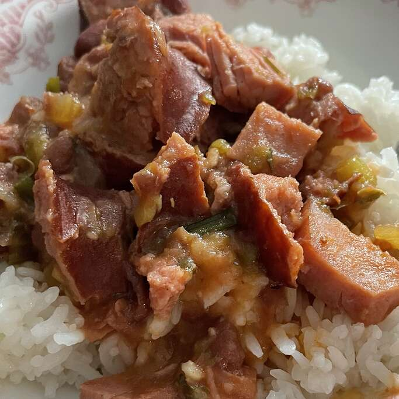

Red Beans and Rice

Description
A small serving of some creamy red beans paired with rice.
Ingredients
- ⅓ pound dried red beans
- 1 andouille sausage links
- ½ tablespoon and ½ teaspoon butter
- ⅔ cup minced onions
- ¼ cup and 1 tablespoon and 1 teaspoons minced green bell pepper
- 2 ½ tablespoons and ½ teaspoon minced celery
- 1 ⅓ bay leaves
- ⅓ slice ham steak, cubed, or more to taste
- ½ tablespoon and ½ teaspoon Creole seasoning, divided
- 2 ⅓ cups chicken broth
- ½ tablespoon and ½ teaspoon chopped garlic
- ¼ cup and 1 tablespoon and 1 teaspoons tomato sauce
- ⅘ teaspoon vinegar
- 2 ½ tablespoons and ½ teaspoon chopped green onions, divided
- ½ tablespoon and ½ teaspoon chopped fresh parsley
- 1 cups cooked rice, or to taste
Method
- Place red beans into a large container and cover with several inches of cool water; let stand 8 hours to overnight. Drain.
- Heat a skillet over medium heat; cook sausage until cooked through, 10 to 15 minutes. Transfer sausage to a work surface and slice.
- Heat butter in a skillet over medium heat; cook and stir onions, bell pepper, celery, and bay leaves until softened, about 5 minutes. Add sausage, ham, and 1/2 of the Creole seasoning; saute over medium-high heat until lightly browned, about 10 minutes. Stir drained beans into sausage mixture.
- Mix chicken broth, garlic, and remaining Creole seasoning into bean mixture; cover skillet and simmer on low for 3 hours.
- Stir tomato sauce, vinegar, and 1/2 of the green onions into bean mixture, slightly smashing beans with a potato masher. Simmer, uncovered, until thickened and beans are tender, about 30 minutes more. Mix remaining green onions and parsley into beans and serve over cooked rice.